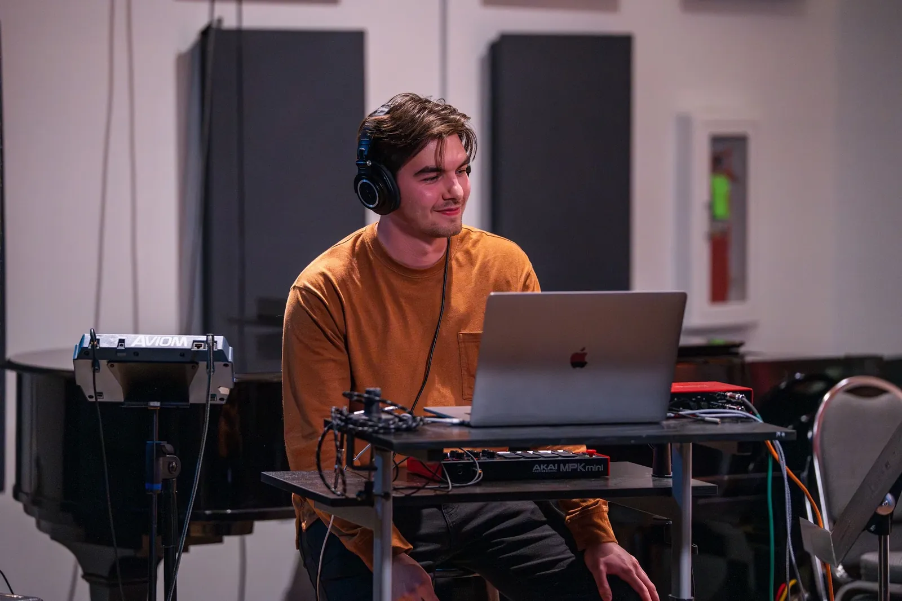

About
Ethan Stirnemann is a composer and producer based in Knoxville, Tennessee, where he is pursuing a Bachelor of Music in Composition at the University of Tennessee.
His work moves between acoustic and electronic worlds. Alongside writing chamber music, he produces and designs sound in Ableton Live and Max/MSP, makes fixed-media and audiovisual pieces, and is building his craft in scoring for film and interactive media.
Ethan performs with the UTK Electroacoustic Ensemble. In his film scoring and game audio coursework he has re-scored scenes from Andrew Huang’s SPACETIME and created the music and sound effects for games, work that brings together his interests in composition, sound design, and technology.

- Based in
- Knoxville, Tennessee
- Studying
- B.M. Composition, University of Tennessee, Knoxville
- Focus
- Composition, electronic music, film & game scoring
- Ensemble
- UTK Electroacoustic Ensemble
- Tools
- Ableton Live, Phase Plant, Max/MSP, DaVinci Resolve, Unreal Engine
Short bio: for programs & press
Ethan Stirnemann is a Knoxville-based composer and producer studying composition at the University of Tennessee. His music spans chamber works, electronic production in Ableton Live, and scoring for film and games. He performs with the UTK Electroacoustic Ensemble.
Approach
A lot of my writing happens in Ableton Live, where acoustic instruments, synthesis, and recorded sound can share the same piece. Whether I’m writing for a piano trio, a film scene, or a game, I’m interested in how music shapes what people feel and notice, and in using technology to get there.
Skills & tools
What I work with
- Composition
- Ableton Live
- Phase Plant
- Max/MSP
- Sound design
- Scoring to picture
- Game audio
- DaVinci Resolve
- Unreal Engine
- Live electronics

Recording session with the UTK Electroacoustic Ensemble.
Let’s talk
Working on something?
Scoring, sound design, or a new piece for your project. I’d like to hear about it.